Following Emma and Alessandra’s serendipitous meeting at the Huntington, Alessandra visited Emma in Seattle in May 2018 to start working on the movie. Alessandra and Emma brainstormed approaches for the documentary and discussed the narrative and the storyboard. During these discussions they decided that the best approach to tell Donzellini’s story would be through a mix of expert interviews, narration, original artwork, music, and animations, and footage of the places Donzellini lived and worked.
It was also during this first meeting that Emma and Alessandra decided they would make four versions (or edits) of the documentary, two versions intended to be shown in universities/for academics which has more specific historical detail and covers more topics not directly related to Donzellini (one with English subtitles and on with Italian) and two shorter public history versions (also with English or Italian subtitles).
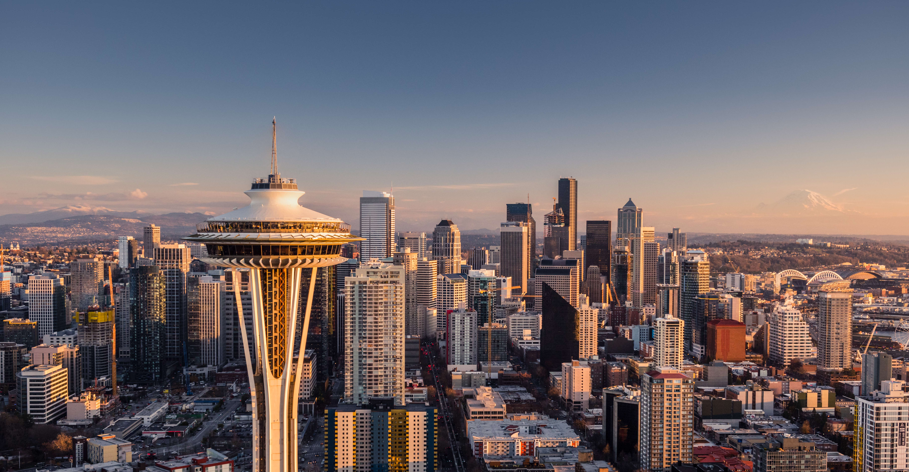
After Alessandra left Seattle the duo remained in contact working on the project storyboard and script and planning for Emma to come to Italy to start production the following Spring. During this time Alessandra assembled the rest of the documentary team in Italy. During the whole process the documentary team met regularly. Alessandra discussed the storyboard, the original soundtrack and the artistic choices behind the movie with Pietro, Davide, Andrea and Chiara in Turin.
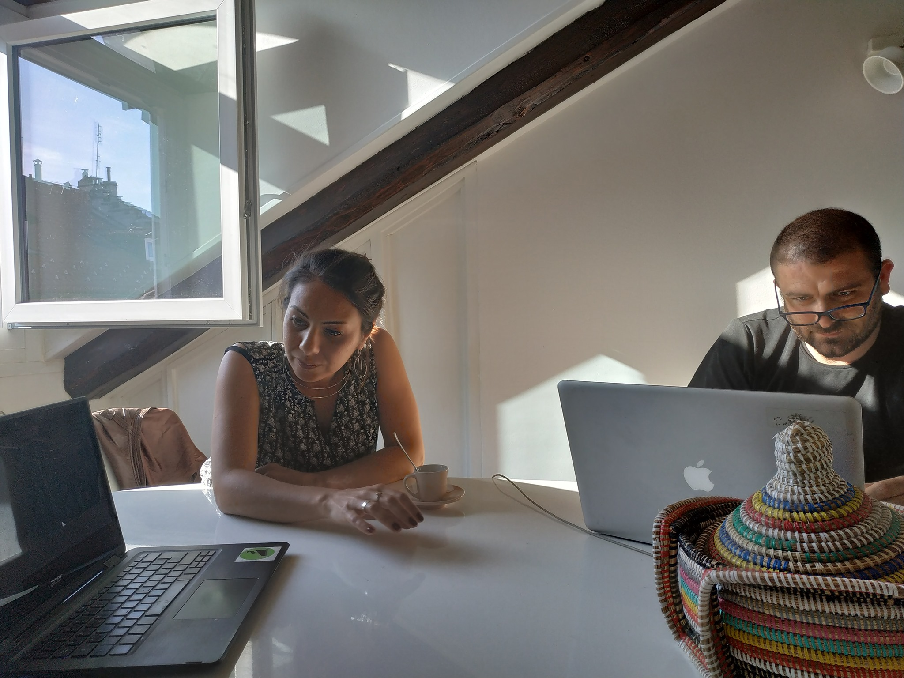
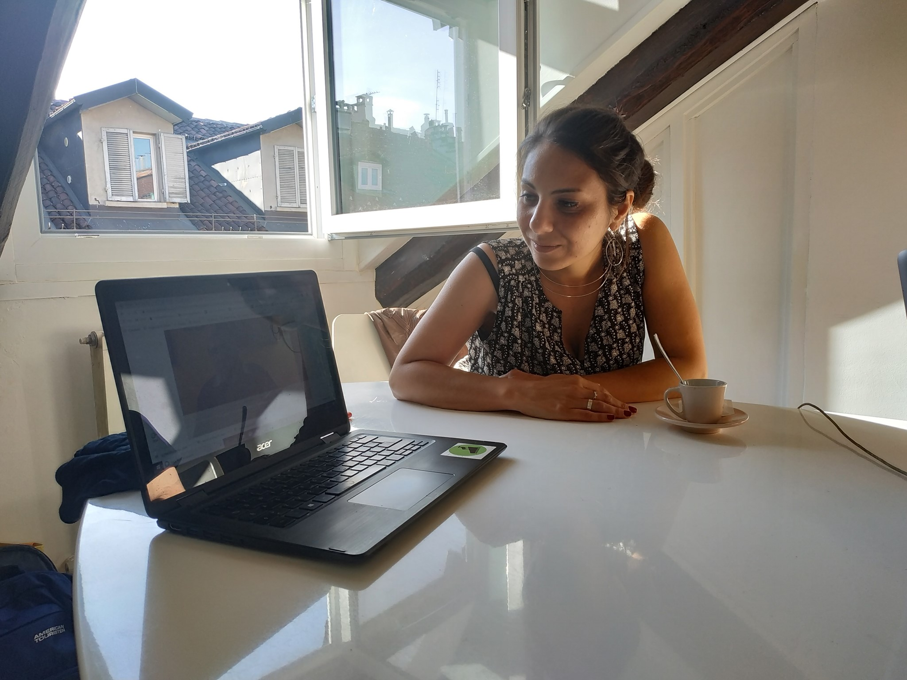
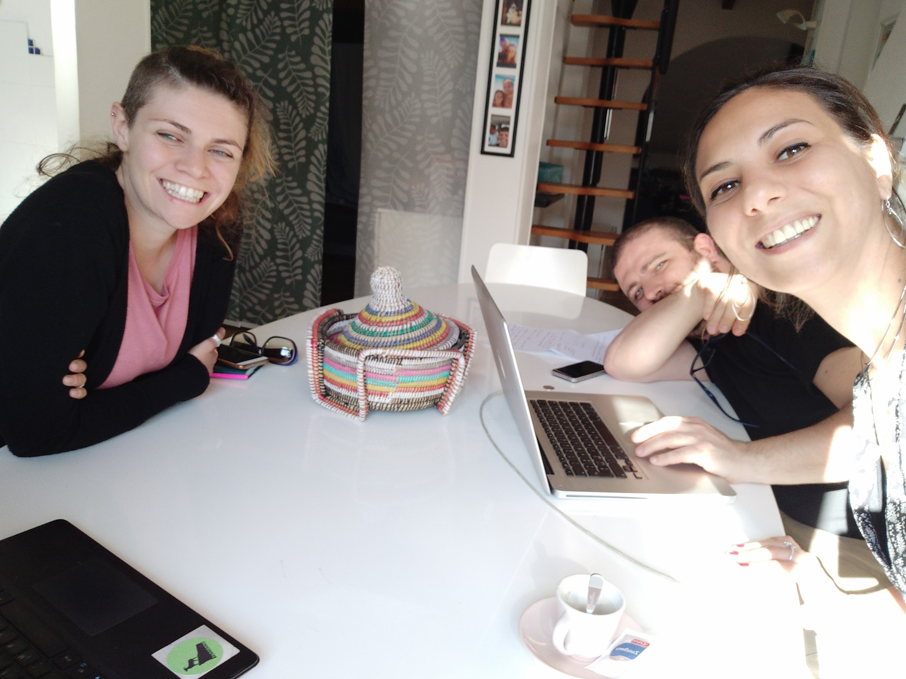
With the storyboard and script finalized and the interview dates with experts set, Emma came to Italy in April 2019. Over a period of ten days Alessandra and Emma filmed the documentary in Verona, Venice, Padua, Ferrara and Turin. It was a once in a lifetime experience and rewarding on so many levels!
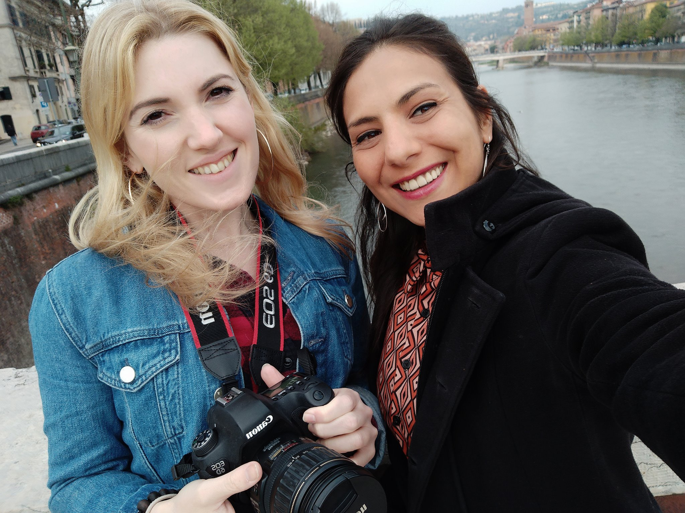
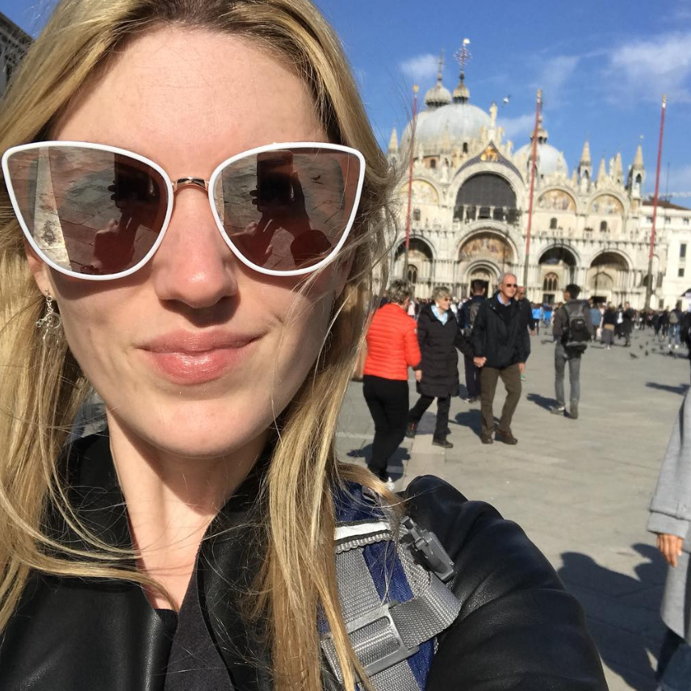
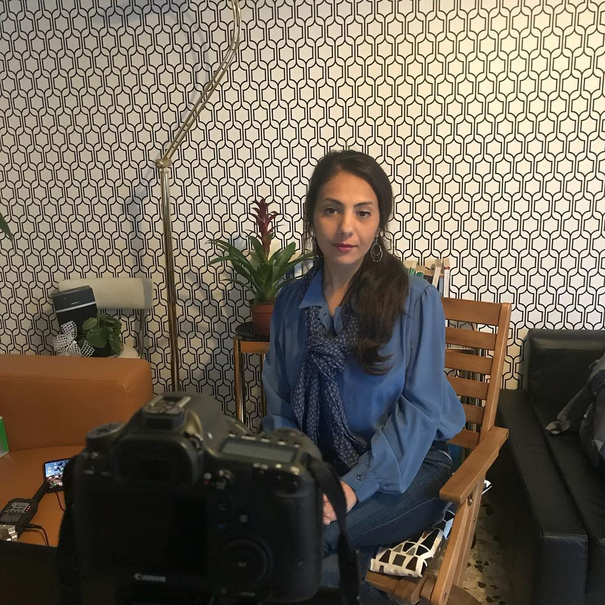
Once Emma returned to the USA she began editing the film, whilst in regular communication with Alessandra who in turn was working with Andrea N on the audio postproduction and Andrea B on the Italian subtitles. Emma also interviewed the final historical expert who lived in Seattle, Wa.
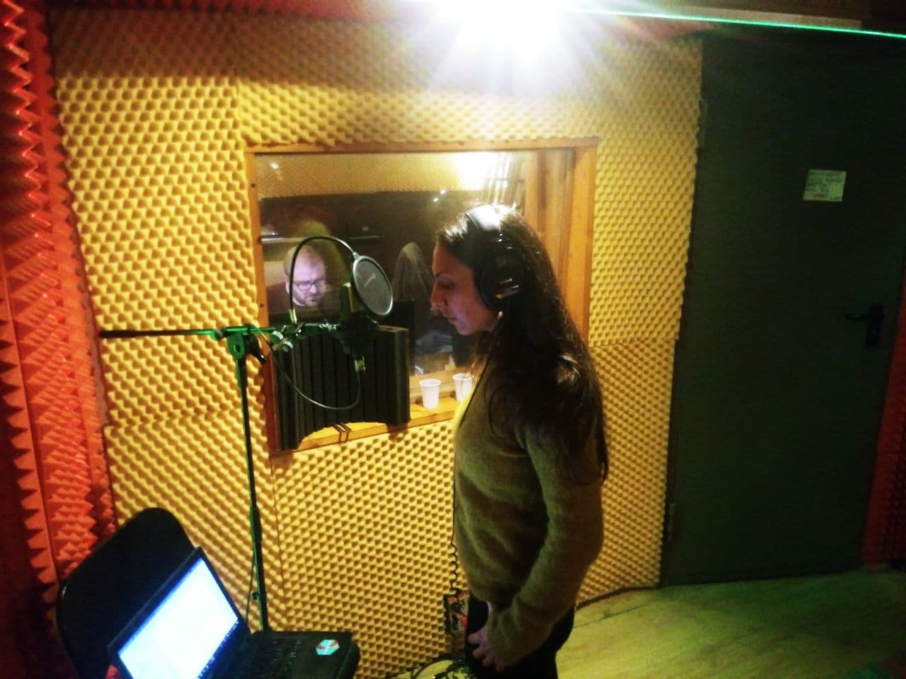
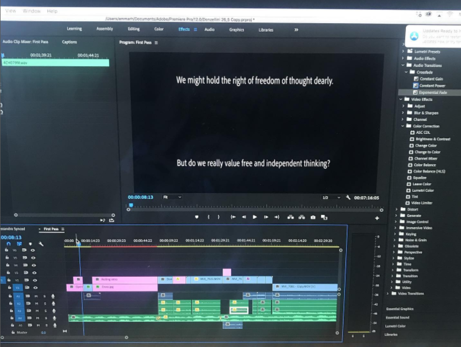
The first edits of the films (the longer versions) were completed in early 2019 and shared with our kickstarter and patreon supporters. A screening was held in Verona in July 2019 at the
Connected histories of religion science and other objects conference organized by Alessandra. In the following two years, it was also screened at the University of Turin (at prof. Belligni’s early modern history course), University of Molise (within the cycle of seminars co-organized by Alessandra ‘
Storia digitale, esperienze e strumenti’) and University of Rome (at the early modern history Scuola di dottorato).
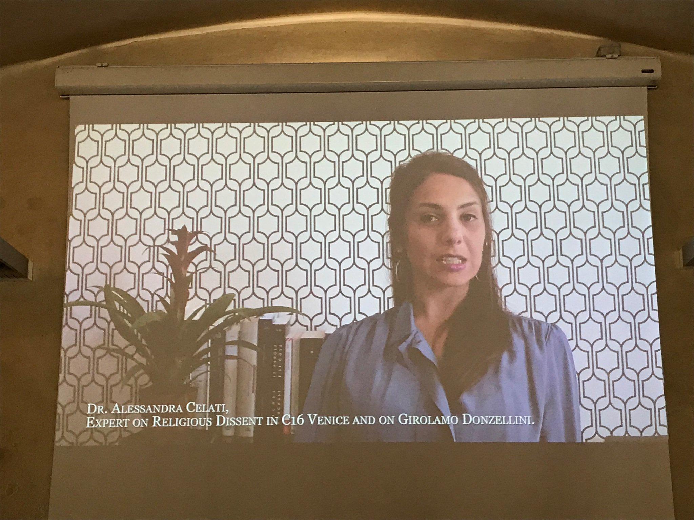
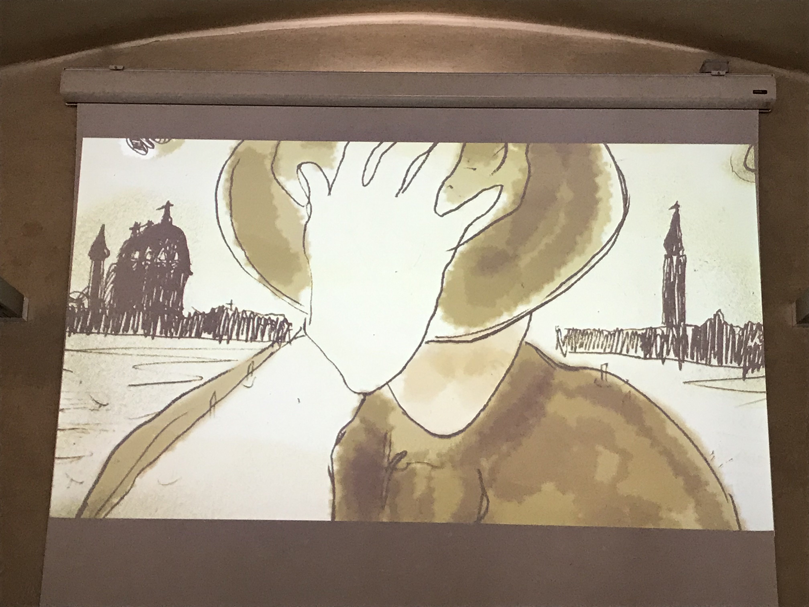
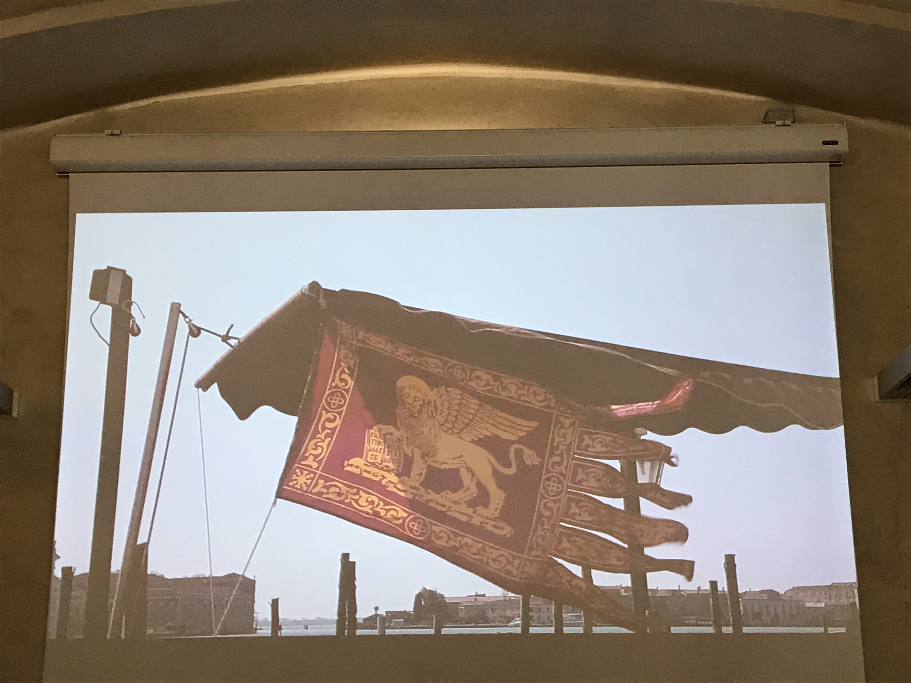
What’s next?
Since 2020 (as the world entered into a global pandemic) Emma and Alessandra have been making additional edits to the film and all versions were completed in early 2022. Now they intend to submit the public history version of the film to conferences and festivals in Italy, Europe, the U.K and the USA and to share it with you via this website.